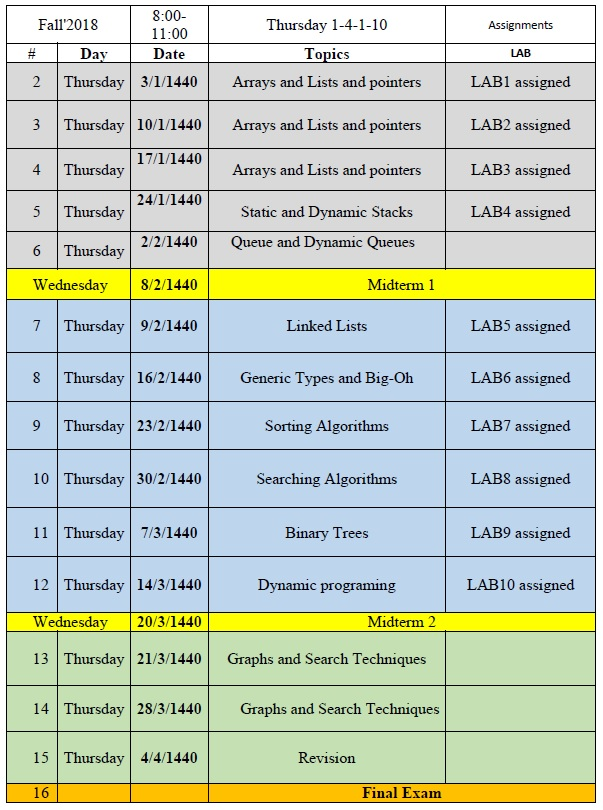

|
Dr. Umar Albalawi Vice-Dean for Graduate Studies and Research Faculty of Computing and IT |
CSC Data Structure and Algorithms
Course Description:
This course covers the topics of data structures and algorithm design along with their respective applications. Topics will include arrays, linked lists, stacks, queues, recursion, trees, searching, sorting and applications to sorting and searching.
Expected Student Learning Outcomes:
- Apply mathematics in the solution of computing problems.
- Choose an appropriate data structure such as stack, queue, binary tree, or graph required to solve a problem.
- Recognize the theory, algorithm and design of algorithmic solutions.
- Test and walkthrough the correctness of algorithmic solutions.
- Employ mathematics in the solution of computing problems.
- Select an appropriate data structure such as stack, queue, binary tree, or graph required to solve a problem.
- Identify the theory, algorithm and design of algorithmic solutions.
- Test and walkthrough the correctness of algorithmic solutions.
- Recognize the trade-offs of using various data structures.
- State big O notation memory usage and running times associated with the developed algorithms.
Coourse contents:
Text Book:
A Practical Introduction to Data Structures and Algorithm Analysis, Clifford A. Shaffer, Third Edition, Prentice Hall
Grading Policy:
- Homework (Lab) (20 %)
- Midterm Exam 1 (20 %)
- Midterm Exam 2 (20 %)
- Final Exam: Comprehensive (40 %)
| Lab: |